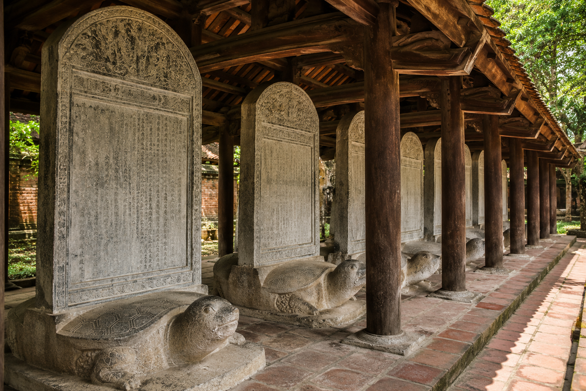
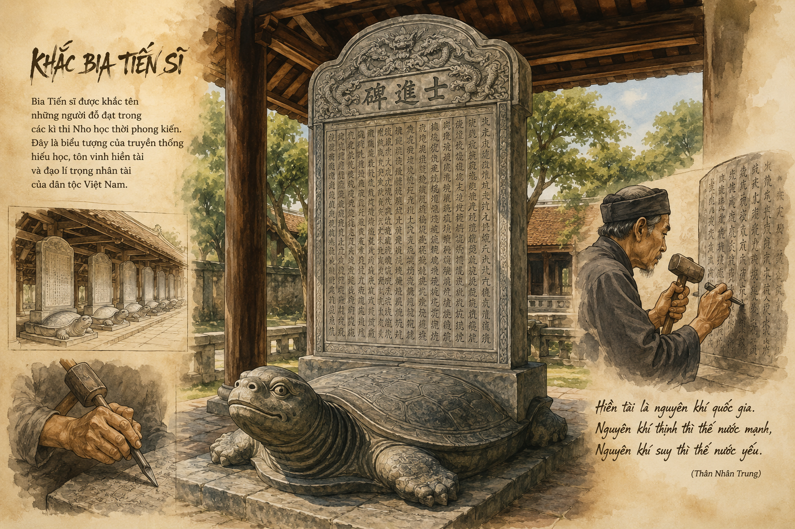

• Thân Nhân Trung (1418 – 1499): Tự là Hậu Phủ, danh sĩ thời Hậu Lê, quê ở Bắc Giang.
• Sự nghiệp: Đỗ Tiến sĩ năm 1469, được triều đình Lê Thánh Tông trọng dụng, góp nhiều công sức tuyển chọn và đào tạo nhân tài; ông từng là thành viên chủ chốt của Hội Tao đàn.

Hình 1: Khung cảnh hàng bia Tiến sĩ tại Văn Miếu - Quốc Tử Giám (h1.png)• Xuất xứ: Trích từ bài văn bia do Thân Nhân Trung soạn năm 1484 (niên hiệu Hồng Đức) vâng mệnh vua Lê Thánh Tông.
• Bối cảnh: Năm 1484, vua Lê Thánh Tông bắt đầu cho dựng bia ghi danh các Tiến sĩ đỗ từ khoa thi Nhâm Tuất (1442) nhằm tôn vinh tri thức, ghi nhận 33 vị đỗ tiến sĩ khoa này và khởi đầu truyền thống dựng bia ghi danh.
| Thuật ngữ | Giải thích ý nghĩa chi tiết |
|---|---|
| Hiền tài | Người tài giỏi, có phẩm chất đạo đức cao quý nổi bật, là thành phần ưu tú nhất của xã hội. |
| Nguyên khí | Chất làm nên cơ sở tồn tại, phát triển và sức sống mạnh mẽ của một đất nước, xã hội. |
| Thánh đế minh vương | Bậc cai trị (vua, chúa) tài giỏi, sáng suốt (trực tiếp chỉ vua Lê Thánh Tông). |
| Sĩ phu / Kẻ sĩ | Tầng lớp trí thức, những người học rộng tài cao trong xã hội thời phong kiến. |
| Mệnh mạch | Tính mạng và huyết mạch; ở đây dùng để chỉ vận mệnh sống còn của đất nước. |
📌 Luận điểm tiền đề:
"Hiền tài là nguyên khí của quốc gia, nguyên khí thịnh thì thế nước mạnh, rồi lên cao, nguyên khí suy thì thế nước yếu, rồi xuống thấp."
• Mối quan hệ nhân quả: Hiền tài quyết định sự sống còn, hưng thịnh hay suy vong của toàn bộ thể chế và đất nước.
• Thái độ của các bậc thánh vương: Bồi dưỡng nhân tài, kén chọn kẻ sĩ, vun trồng nguyên khí làm việc ưu tiên hàng đầu.
Triều đình đã dành cho người đỗ đạt nhiều ân huệ đặc biệt:
Dù đã ban nhiều ân huệ nhưng nhà vua vẫn cho là "chưa đủ", vì vậy phải khắc bia đá vĩnh cửu nhằm:

Hình 2: Sơ đồ tư duy logic lập luận trong bài kí (h2.png)Đặt vấn đề: Tại sao các bậc thánh vương đã cho kén chọn kẻ sĩ, ban tước trật, nêu tên ở tháp Nhạn, bày tiệc Văn hỷ mà vẫn cho là "chưa đủ" và phải quyết định dựng bia đá tại Quốc Tử Giám?
Hướng giải quyết: Các hình thức đãi ngộ như tiệc mừng hay chức tước chỉ có giá trị nhất thời, giới hạn trong đời người. Việc dựng bia đá mang tính chất trường tồn muôn đời ("lưu vẻ sáng lâu dài"), vừa tạo sức mạnh nhắc nhở trách nhiệm đạo đức lớn lao cho sĩ phu đương thời, vừa để lại tấm gương soi cho hàng trăm thế hệ mai sau.
Hiện nay tại Văn Miếu – Quốc Tử Giám (Hà Nội) còn lưu giữ 82 tấm bia Tiến sĩ khắc bằng đá xanh, đặt trên lưng rùa. Năm 2010, 82 tấm bia này đã được UNESCO chính thức công nhận là Di sản tư liệu thế giới thuộc Chương trình Ký ức Thế giới.
Vận dụng tư tưởng "nguyên khí quốc gia" để viết một đoạn văn ngắn (khoảng 150 chữ) bàn luận về tầm quan trọng của việc thu hút nhân tài và phát triển nguồn nhân lực chất lượng cao trong thời đại công nghệ số hiện nay.
Câu văn "Hiền tài là nguyên khí của quốc gia" được tác giả đặt ngay ở đầu bài kí để làm tiền đề tư tưởng trực tiếp, định hướng toàn bộ lý lẽ và dẫn chứng cho phần lập luận về mục đích dựng bia đá phía sau.
Câu 1 (SGK Trang 76): Tìm trong đoạn 2 của văn bản những từ ngữ thể hiện thái độ trọng dụng hiền tài của "các đấng thánh đế minh vương".
Câu 2 (SGK Trang 76): Trong văn bản có một câu trực tiếp nói về mục đích của việc dựng bia ghi danh những người đỗ tiến sĩ. Bạn hãy cho biết đó là câu nào?
Câu 3 (SGK Trang 76): Xác định luận đề của văn bản và cho biết vì sao bạn xác định như vậy?
Trả lời chi tiết:
• Luận đề: Khẳng định tầm quan trọng sống còn của hiền tài đối với quốc gia và ý nghĩa to lớn của việc tôn vinh hiền tài qua việc dựng bia ghi danh.
• Căn cứ xác định: Ngay từ mở đầu, tác giả nêu tư tưởng tiền đề "Hiền tài là nguyên khí của quốc gia", toàn bộ lập luận sau đó tập trung làm rõ vai trò của hiền tài, trách nhiệm của sĩ phu và mục đích vĩnh cửu của việc dựng bia đá lưu danh.
Câu 4 (SGK Trang 76): Xét về nội dung, đoạn 3 có mối quan hệ như thế nào với đoạn 2?
Câu 5 (SGK Trang 76): Bạn hãy khái quát nội dung của đoạn 4 và cho biết đoạn này đảm nhận chức năng gì trong mạch lập luận?
Câu 6 (SGK Trang 76): Khi viết bài văn bia, tác giả đã thể hiện ít nhất hai tư cách: một là người truyền đạt "thánh ý", hai là kẻ sĩ được trọng dụng. Việc thống nhất hai tư cách đó đã chi phối như thế nào đến cách triển khai luận điểm?
Câu 7 (SGK Trang 76): Tìm một vài dẫn chứng lịch sử để làm sáng tỏ nhận định: "Vì vậy các đấng thánh đế minh vương chẳng ai không lấy việc bồi dưỡng nhân tài, kén chọn kẻ sĩ, vun trồng nguyên khí làm việc đầu tiên."
Dẫn chứng tiêu biểu:
1. Thời Lý: Vua Lý Thánh Tông cho lập Văn Miếu (1070), mở khoa thi Minh kinh bác học đầu tiên (1075) và lập Quốc Tử Giám (1076) để đào tạo nhân tài.
2. Thời Trần: Định kì mở các khoa thi Thái học sinh, sử dụng các bậc trí thức kiệt xuất như Chu Văn An, Mạc Đĩnh Chi, Trương Hán Siêu...
3. Thời Lê Sơ: Vua Lê Thái Tổ ban "Chiếu cầu hiền", vua Lê Thánh Tông mở rộng quy mô thi cử, ban hành Luật Hồng Đức tôn vinh giáo dục.
Câu 8 (SGK Trang 76): Qua việc đọc văn bản, bạn hiểu gì về tầm quan trọng của việc xác định mục đích viết và bày tỏ quan điểm của người viết trong văn nghị luận?
Hãy hoàn thành mô hình lập luận tam cú (syllogism) cho bài văn bia theo gợi ý dưới đây:
• Tiền đề đại (Mô hình tổng quát): Hiền tài là nguyên khí quốc gia \(\rightarrow\) Quyết định sự thịnh suy của đất nước.
• Tiền đề tiểu (Thực tế): Triều đình nhà Lê tôn vinh và khắc bia đá ghi danh các Tiến sĩ.
• Kết luận: Sĩ phu được khắc tên phải dốc sức báo đáp, rèn giũa đạo đức để củng cố mệnh mạch cho nhà nước.
Viết một đoạn văn (khoảng 150 chữ) nêu suy nghĩ của bạn về sự cần thiết của việc trọng dụng hiền tài trong bối cảnh đất nước hội nhập hiện nay.
📌 Gợi ý dàn ý:
📝 Đoạn văn tham khảo:
Tư tưởng "Hiền tài là nguyên khí của quốc gia" của Thân Nhân Trung đến nay vẫn giữ nguyên giá trị thời sự. Trong kỷ nguyên hội nhập toàn cầu và cách mạng công nghệ, trọng dụng hiền tài không chỉ là chính sách ưu đãi mà đã trở thành yêu cầu sống còn đối với sự phát triển của đất nước. Hiền tài với tri thức tiên tiến và tâm huyết sẽ là lực lượng tiên phong sáng tạo, giải quyết những thách thức lớn của xã hội và đưa Việt Nam vươn ra thế giới. Để thu hút và phát huy tối đa tiềm năng của nhân tài, chúng ta cần xây dựng môi trường làm việc minh bạch, chính sách đãi ngộ xứng đáng và cơ chế tôn vinh thực chất. Là thế hệ trẻ, mỗi học sinh cần không ngừng học tập, rèn luyện cả tài lẫn đức để góp phần củng cố "nguyên khí" cho dân tộc trong tương lai.